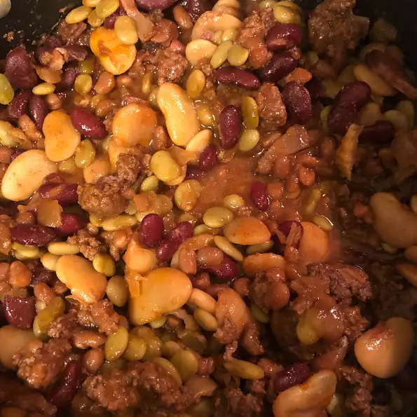

Calico Beans

Description
Calico Beans (Also known as Cowboy Beans)
is a bean dish popular in the southwestern United States. The dish
consists of pinto beans and ground beef in a sweet and tangy sauce.
Other types of meat can be used. The flavor is similar to baked beans but
with a southwestern twist. The dish includes canned beans, ketchup,
and sometimes barbecue sauce. I like mine with bacon a little bit of
brown sugar.
Ingredients
- 1 pound ground beef
- ½ cup bacon, chopped
- 1 (15 ounce) can pork and beans
- 1 (15 ounce) can kidney beans, drained
- 1 (15 ounce) can butter beans
- 1 (15 ounce) can lima beans, drained
- 1 cup packed brown sugar
- 1 cup chopped onion
- ½ cup chopped celery
- ½ cup ketchup
- 3 tablespoons white wine vinegar
- 1 teaspoon mustard powder
Steps
- Preheat the oven to 350 degrees F (175 degrees C).
- Cook ground beef and bacon in a large, deep skillet over
medium-high heat until evenly brown. Drain and transfer
meat to a 4-quart casserole dish.
- Add pork and beans, kidney beans, butter beans, lima beans,
brown sugar, onion, celery, ketchup, vinegar, and dry mustard
to the casserole dish; mix well.
- Bake, covered, in the preheated oven until bubbly and heated through,
about 1 hour.
- Enjoy!